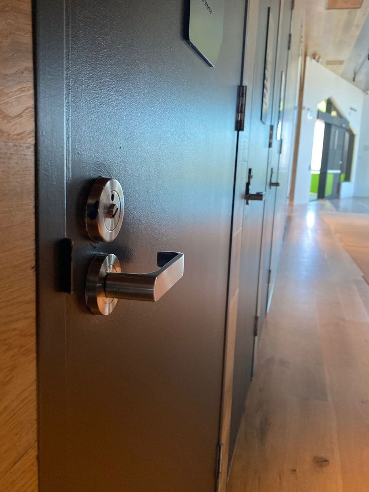

On this page
AT A GLANCE
At SPL Security Solutions, we proudly provide 24/7 mobile locksmith services throughout Currumbin, delivering expert assistance wherever it’s needed.
Get A Free Quote Now!

Locksmiths Currumbin & Surrounding Areas
At SPL Security Solutions, we proudly provide 24/7 mobile locksmith services throughout Currumbin, delivering expert assistance wherever it’s needed. Whether it’s an emergency lockout, a broken key or a planned security upgrade, our mobile team is equipped to handle it all.
Our mobile units are fully stocked with advanced tools and a wide range of components, allowing us to address most lock and key issues on-site. From repairing damaged locks to installing new systems, we ensure prompt and professional solutions that prioritise your convenience and security. Whether you need urgent help or are looking to improve your property’s protection, we’re here to assist.
Call us on (07) 5588 8111 for dependable locksmith services in Currumbin.
Our residential locksmith services in Currumbin are designed to keep homes secure and accessible. From lock installations to emergency assistance, we provide reliable solutions for your property’s safety.
Our commercial locksmith services in Currumbin deliver tailored security solutions for businesses. Whether you need advanced locking systems, access control or repairs, we help safeguard your operations.
Our automotive locksmith services in Currumbin include on-site solutions for car lockouts, lost keys, and ignition repairs. We specialise in programming transponder keys and providing quick replacements to keep you on the move.
Our restricted key systems in Currumbin offer enhanced access control and prevent unauthorised duplication. These solutions are ideal for managing security in residential and commercial properties.
We provide comprehensive services for safes in Currumbin, including unlocking, combination changes and maintenance. Protect your valuables with safes designed to resist theft, fire and water damage.
Our security systems in Currumbin combine CCTV, alarms, and access control for complete protection. We design customised solutions to meet the unique security needs of homes and businesses.
Our lock hardware services in Currumbin include advanced options like high-security deadbolts, smart locks, and tamper-proof mechanisms. We ensure your property’s locks are durable and secure.
Upgrade your doors in Currumbin with functional and stylish hardware. Our range includes sturdy hinges, modern handles and sliding door systems to enhance security and usability.
Our door hardware selection features fire-rated elements, smooth-operating closers, and refined handles, designed to suit both traditional and modern aesthetics in Currumbin.
Emergency Locksmith Services Currumbin
Emergencies can happen at any time and our experienced team is ready to respond quickly to keep you safe and secure.
- Accidental lockouts
Locked out of your home, car or office? We provide fast, reliable solutions to regain access with minimal disruption. - Lost or stolen keys
Missing keys can leave your property vulnerable. Our team can rekey or replace locks to restore your security. - Damaged locks
Worn-out or broken locks compromise the safety of your entry points. We handle immediate repairs or replacements to restore functionality. - Malfunctioning digital locks
When electronic locks or smart systems fail, we diagnose and repair the issue, ensuring your property remains secure. - Safe access issues
Struggling to open a safe or update its combination? We provide specialised services to resolve access problems without damaging your safe.

Contact Details
24/7 Emergency Locksmiths or Security Tech


Trading Hours
Retail Shop

Frequently Asked Questions
-
What can I do if I’m locked out of my car late at night?
Stay calm and avoid attempting to force entry, as this could damage your vehicle. Contact a professional locksmith for prompt assistance with minimal risk to your car.
-
How can I improve the security of my home without replacing all the locks?
Rekeying your locks is a cost-effective way to enhance security. It changes the internal mechanism so old keys no longer work, without needing a full lock replacement.
Locksmith & Security Solutions Gold Coast, Brisbane & Northern NSW